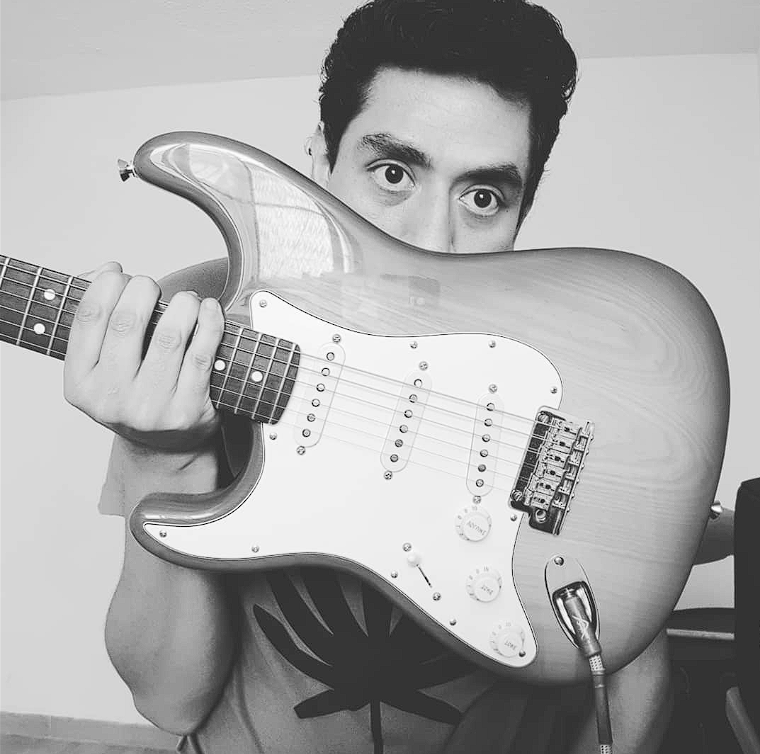
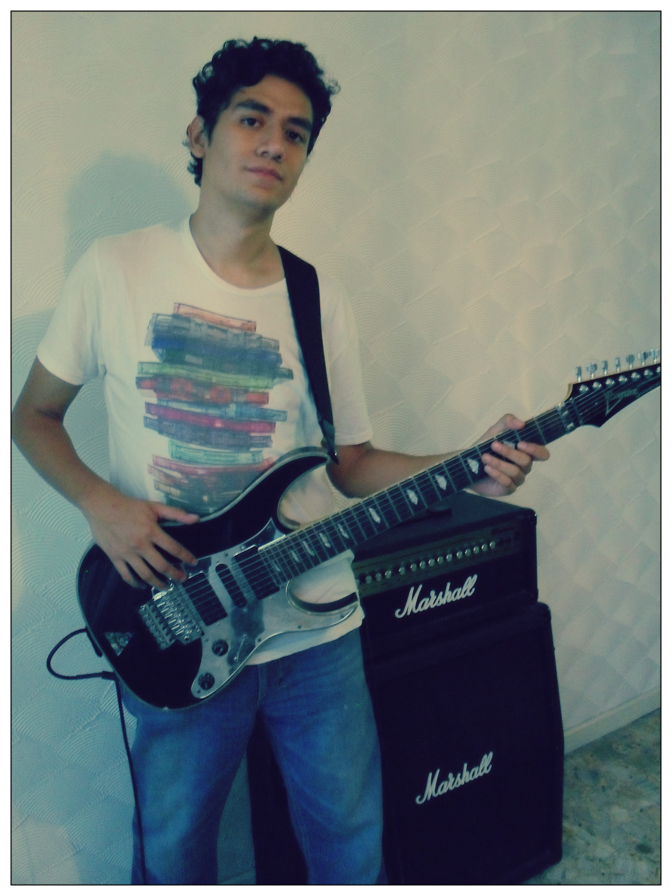
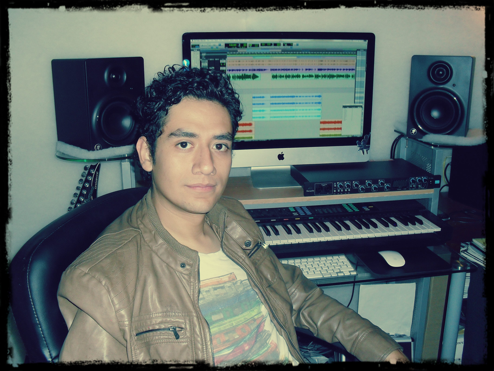
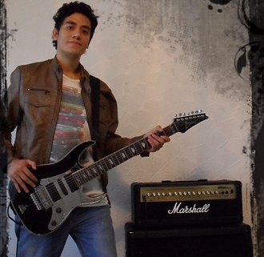

Comencé en la música a la edad de 14 años, empecé a interesarme por los géneros de música contemporáneos principalmente y así fue como adopte la guitarra como instrumento principal, mas adelante fui interesándome todo el ámbito de producción y composición, comencé también grabando mi propia música y empecé a tocar el teclado y también a ser voz principal tanto en mis proyectos, como en muchos otros en los que he participado.
Estudie Ingeniería en audio y producción en la Academia de Música Fermatta, durante este tiempo y a la fecha me he dedicado a realizar producciones independientes a diferentes bandas y también me he dedicado a la composición, tanto como artista independiente así como para medios audiovisuales.
He realizado ingeniería y mezcla en discos de bandas independientes, así como personales, también he realizado grabación y mezcla de Foley, sincronizando audio contra video.